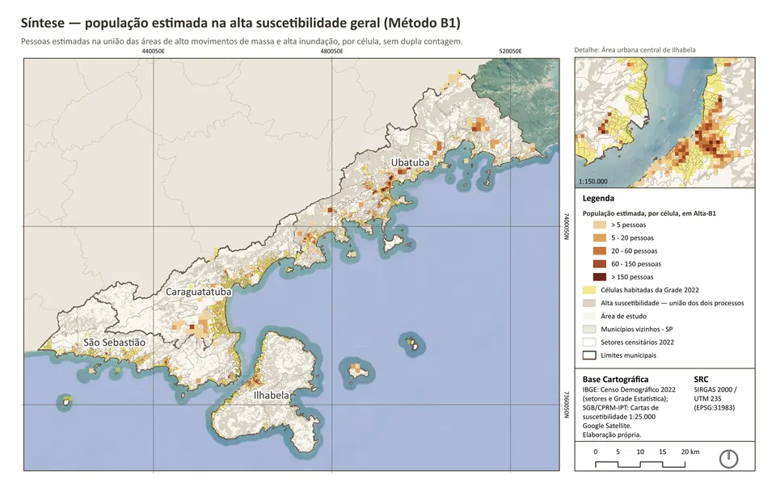
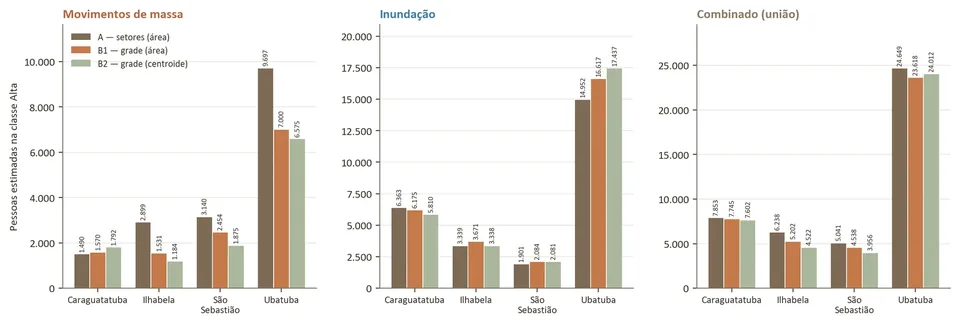

02 Project · São Paulo North Coast, Brazil
Between Slopes and Waters
Population, households and susceptibility to mass movements and floods on São Paulo's North Coast
Caraguatatuba, Ilhabela, São Sebastião and Ubatuba
Overview
São Paulo's North Coast concentrates its human settlement between the Serra do Mar range and the sea. The study overlays official susceptibility maps with the 2022 Census and compares three ways of estimating who lives in High-class zones. In total, the methods differ by less than 9%; by process and municipality, however, the gap reaches 47%, with a clear pattern: the tract-based method tends to overestimate population on slopes and underestimate it on floodplains. Ubatuba has the largest exposed population, mostly on river plains crossing the urban area; along the São Sebastião channel, settlement is squeezed between the sea and susceptible slopes.
Problem
No source states how many people live inside each susceptibility polygon. Every estimate depends on a rule for distributing population in space — and the choice of census unit can change the result.
Objective
Measure how much estimates of population and households in areas of high susceptibility to mass movements and floods change depending on the spatial allocation method.
Methods & tools
- Only the High class of the SGB/CPRM–IPT susceptibility maps (1:25,000), by process and combined by geometric union (each person counted once).
- Method A (comparison): census-tract population × share of tract area inside the High zone.
- Method B1 (main): Statistical Grid cell population (200 m in urban areas) × area share; border cells split between municipalities.
- Method B2 (sensitivity): whole cell counted when its centroid falls in the High zone.
- Areas in SIRGAS 2000 / UTM 23S; automated SQL integrity tests and visual GIS checks.
Data sources
- SGB/CPRM–IPT — Cartas de suscetibilidade a movimentos gravitacionais de massa e inundações, 1:25.000 (2015–2017)
- IBGE — Censo 2022: malha de setores e Agregados por Setores (v0001, v0007)
- IBGE — Censo 2022: Grade Estatística, células de 200 m e 1 km (TOTAL, TOTAL_DOM)
- IBGE — limites municipais 2022
Data belong to their respective sources and are subject to their own terms of use.
Results
41,102
people estimated in combined high susceptibility by the main method (B1); the three methods range from 40,092 to 43,780.
−47.2%
is the B1 vs A gap for mass movements in Ilhabela: large tracts spread population over empty slopes, while the 200 m grid follows actual settlement more closely.
25.5%
of Ubatuba's population (23,618 people) is in high susceptibility under B1 — the highest absolute and relative figure; 16,617 of them in flood zones.
8.97%
is the spread between methods in the combined total; by process and municipality it reaches 47% — choosing the spatial unit is an analytical decision, not a technical detail.
Maps & charts
Click the image to zoom in; drag or scroll to move around.


Enlarge image

Enlarge imageExplore additional maps, charts, and results in the full report available at the end of this page.
Limitations
- Susceptibility is not risk: vulnerability, building exposure and event probability were not estimated.
- Time gap: maps from 2015–2017 (2010/2011 base data) versus the 2022 Census; zones do not reflect the February 2023 disaster.
- All methods assume uniform population within each unit, which is weaker in rural areas covered by 1 km cells.
Full materials
Full report (PDF, Portuguese)
Document in Portuguese.
Full report (PDF, Portuguese) (Opens in a new tab)Code on GitHub
gabrielloubarboza/Suscetibilidade_ambiental_no_Litoral_Norte_SP
Data preparation, analysis and table export are reproducible and tested.
Code on GitHub (Opens in a new tab)Data (GeoPackage)
Licence: Derived from IBGE data (reuse with source citation)
Not distributed: Polygons derived from the SGB/CPRM–IPT maps (no explicit public reuse licence); they can be regenerated with the repository script.